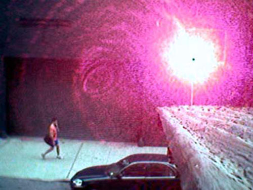

A front page article in The Times on Friday describes widespread winter storm damage to eruvs across the northeastern United States, including extensive damage to the eruv that outlines much of Manhattan.
For those unfamiliar, an eruv is a symbolic boundary – a wire – that is strung between utility poles around the perimeter of an orthodox Jewish area. Intact, it allows Jews to carry objects outside of their homes on the Sabbath – a “magic schlepping circle” as the writer Calvin Trillin liked to call it.
Back in 2006, I created the laser eruv, a wireless version of the boundary not susceptible to the kind of damage mentioned in the article. Like a conventional eruv, it works by symbolically converting the space within its boundaries into the shared private space of the community, expanding the definition of home where some carrying on the Sabbath is allowed.
Rather than wire, each side of my eruv consists of a single laser shot directly into the lens of a small surveillance camera across the street, creating an image like the one above, a so-called bloom of laser light. If a beam is interrupted, the surveillance camera registers the absence of its bloom, easily pinpointing the portion requiring maintenance.
For more on the eruv, see my previous work A Street History in Semacode. This video from 2006 explains the laser eruv in more detail:
- Eruv Storm Damage in The New York Times
- In Praise of Loopholes
- Jewish Ideas Daily
- The Manhattan Eruv
- Eruvim in Modern Metropolitan Areas
- Talmudic Places in a Postmodern World
- Between City and Desert
More about the eruv:
- How to Zap a Camera
- On Drawing Lines on a Map
- Sophie Calle
Related Work:
Thanks to David Neff for engineering and photography.